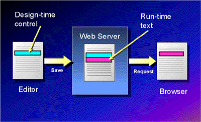

|
| ||
|
| ||
Updated: February 13, 1997
This overview is provided in question-and-answer format.
Questions
What is a Design-time control?
What can be authored with a Design-time control?
Which editors will support Design-time controls?
Can third parties build Design-time controls?
How can I build a Design-time control?
How do Design-time controls relate to FrontPage WebBots?
Do Design-time controls replace standard ActiveX™ controls?
Microsoft is defining a new class of ActiveX controls called Design-time ActiveX controls. These controls are used exclusively at design time (authoring time) to author Web content. They function just like an embedded wizard that can be continuously edited to modify the text it generates into the Web page. Design-time controls take advantage of all the rich OLE design-time capabilities -- in-place editing, property sheets, and persstence -- to capture user inputs, thereby extending the capabilities of editors that support Design-time ActiveX controls.
Unlike an ActiveX control, a Design-time control is never "alive" at run time. Instead, Design-time controls persist run-time text that is acted on by downstream text consumers such as browsers and components running on Web servers. A host container can use them extensively to provide easy authoring of Active Server Pages that contain scripting and ActiveX server components.
Design-time ActiveX controls are standard ActiveX controls that have a special interface that lets them generate text. The text is saved into the file by the editor and processed at run time. The structure and content of the text that is generated is entirely up to the control. The control can generate any text that could have been inserted into the file by a knowledgeable user with a standard text editor. Once the file has been saved, the Design-time controls are inactive, and only the run-time text is "alive". Design-time controls participate at design time as all ActiveX controls do; they can handle their own drawing, accept mouse and keyboard input, and provide context menus and property pages. They provide a rich mechanism for extending the graphical editing environment of an HTML editor.

When the file is saved, the Design-time control is wrapped inside an HTML comment, making it invisible to any downstream processor that respects HTML comments. If the file is an Active Server Page, the Design-time control is stripped from the file before the file is processed and any HTML is delivered to the browser. In the example below, the Design-time control is shown as green text, and the run-time text is in black. All content in green will be logically hidden from any HTML browser.
Sample of a Design-time control in a text file after it has been saved:
<!--METADATA TYPE="DesignerControl" startspan
<OBJECT ID="Billboard1" WIDTH=460 HEIGHT=60
CLASSID="CLSID:CF40D084-10E4-11D0-8712-00A024A7C573">
<PARAM NAME="RuntimeCodeBase" VALUE="code">
<PARAM NAME="ImageCount" VALUE="2">
<PARAM NAME="ImageUrl0" VALUE="media/ad_1.gif">
<PARAM NAME="ImageTrans0" VALUE="1">
<PARAM NAME="ImageUrl1" VALUE="media/ad_2.gif">
<PARAM NAME="ImageTrans1" VALUE="6">
</OBJECT>
-->
<APPLET NAME="Billboard" CODE="DynamicBillBoard" CODEBASE="code"
HEIGHT="60" WIDTH="460" ALT="Billboard">
<PARAM NAME="Delay" VALUE="2000">
<PARAM NAME="billboards" VALUE="2">
<PARAM NAME="Bill0" VALUE="media/ad_1.gif,""">
<PARAM NAME="Bill1" VALUE="media/ad_2.gif,""">
<PARAM NAME="Transitions"VALUE="2,ColumnTransition,FadeTransition">
</APPLET>
<!--METADATA TYPE="DesignerControl" endspan-->
Design-time controls can author any text-based solution. Because text (the ultimate standard) is what Design-time controls generate into the Web page, they can target any downstream processor that consumes text. Examples of downstream text processors are HTML browsers, Active Server Pages in Microsoft Internet Information Server version 3.0, and template processors like Cold Fusion. The range of uses for Design-time controls is wide. A Design-time control can be used to author:
Design-time controls will be supported by all Microsoft HTML editors. These controls were introduced first in Visual InterDev™ (previously code-named "Internet Studio"), but they will be hosted by Microsoft FrontPage and "Trident." We expect Design-time control support from a significant number of third-party HTML editors. This technology allows third-party developers to dynamically extend their editors and leverage their investment in ActiveX technology, thereby creating a market for developers of Design-time controls.
Yes. Microsoft has held design previews with independent software vendors, and published the Microsoft Design-time Control SDK for building these controls. The SDK also includes the information necessary to build tools that host Design-time controls. We expect hundreds of Design-time controls to be available from third-party software vendors over time, providing a rich set of components that can be used to seamlessly extend the capabilities of any editor that supports these controls.
The specs in the Design-time Control SDK (and also included on this Web site) provide background information on Design-time controls and some preliminary information on writing controls. Design-time controls can be written using any development tool that can create ActiveX controls, including:
We are working with third-party development tools to provide integrated support for building Design-time ActiveX controls. Building Design-time controls consists first of creating a standard ActiveX control and then implementing the IActiveDesigner interface. For more information on building a Design-time ActiveX control, see the documents listed on the Design-time Control SDK home page.
Design-time control technology is a COM-based component solution that will be supported by a wide number of HTML editors, including the Microsoft FrontPage, Visual InterDev (previously code-named "Internet Studio"), and "Trident" editors. The FrontPage WebBots technology, on the other hand, is specifically designed to work with FrontPage.
| Comparison points | Design-time control |
FrontPage WebBot |
| Requires FrontPage server extensions | No | Yes |
| Requires FrontPage editor | No | Yes |
| Based on COM—easy to build, share, host | Yes | No |
No. Design-time controls differ from standard ActiveX controls in that they do not contain a binary run-time component, so Microsoft has decided to name Design-time controls as a separate category of ActiveX controls. Unlike ActiveX controls, a Design-time control is never "alive" at run time. Instead, Design-time controls persist run-time text that is acted on by downstream text consumers like browsers and components running on Web servers. Design-time controls will co-exist successfully with standard ActiveX controls.
Did you find this material useful? Gripes? Compliments? Suggestions for other articles? Write us!
© 1999 Microsoft Corporation. All rights reserved. Terms of use.